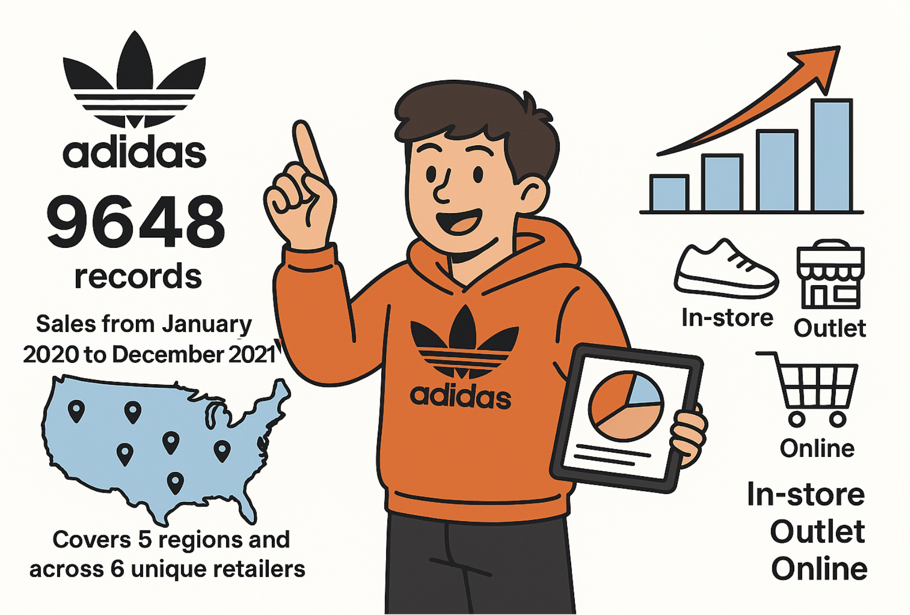
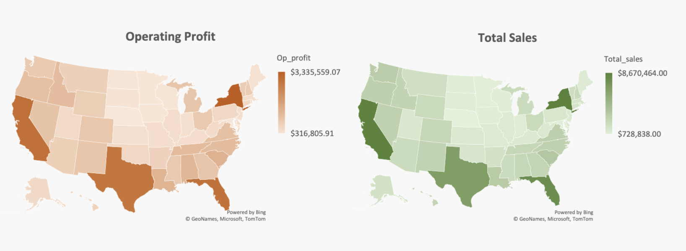

Adidas Sales Analysis
Data Cleaning | Sales Performance | Regional Analysis
Uncover trends and patterns that can inform data-driven decisions

In this project I analyzed the Adidas sales database for the year 2020 and 2021 and identify key insights to help improve sales performance and optimize business strategies. By analyzing the sales data, we aim to understand factors influencing sales, identify trends, and uncover opportunities for growth. What I didn’t expect? Just how messy the data would be—and how much I’d grow as a problem-solver by cleaning it up. The data looked clean; however, it was not.
Data Cleaning: Our original dataset contained spaces between words in column names, so for writing code more smoothly, we removed those spaces. We also had to adjust our Invoice Date column to be read as a date, in order to filter the data by 2020 and 2021. The date formats also were mixed between using dashes and slashes so we had to format all the dates to a single format. We checked for missing and null values in our data as well as checked to make sure our numeric values were read as numbers and not as text.
Once the data was clean, I wrote SQL queries to find interesting insights:
Insight #1: Total Sales and Profits across US States - The trend was similar across both metrics: New York ranked highest, while Nebraska ranked lowest.
Insight #2: Pricing Analysis
High Average Price ≠ Highest Operating Profit
Washington had the highest average price per unit, but it doesn’t appear among the top profit-generating states — indicating that higher unit prices do not necessarily translate to maximum total profit. Texas, California, Florida, and New York emerge as profit powerhouses despite not having the very highest prices, which suggests that sales volume is the primary driver of total profit.
Recommendations — Pricing Opportunities
Some high-price states (for example, Washington and Colorado) show only moderate profits; a modest price reduction could increase sales volume and overall profit. Conversely, high-volume, mid-price states such as Texas and Florida could be candidates for selective premium pricing experiments without materially reducing volume.
Insight #3: Channels tell a story too
Online sales stand out as the top performer, generating the highest operating profit among channels. This indicates strong digital sales momentum for Adidas: the online channel benefits from lower overhead costs and wider reach, possibly boosted by increased consumer adoption of e-commerce and effective digital marketing strategies.
Recommendations: Based on the analysis, expand the online sales channel to capture higher-margin opportunities and broader reach. Specifically, improve the online user experience (faster checkout, clearer product pages), deploy targeted digital advertising to high-conversion segments, and strengthen retailer integration to streamline fulfillment and reduce costs. These steps should help increase conversion, raise average order value, and amplify operating profit from the digital channel.
← BACK TO PROJECTS